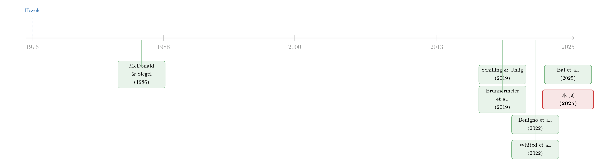

谁先按下「数字化」按钮？——一场货币竞争里的先动与后动
本文读的是 Cong & Mayer (2025, Journal of Financial Economics)：把法币数字化（升级支付系统、上线 CBDC）当成一个动态博弈里的实物期权来建模。核心结论出人意料——越是不那么强势、但已被广泛采用的货币（如人民币、欧元）越会抢先数字化，享有「先动者优势」；最强势的美元反而按兵不动，等到地位被挑战才出手；而最弱的货币干脆放弃数字化。 但拖延是有代价的：迟迟不动，会给私人数字货币（稳定币、加密货币）腾出真空，让它趁机坐大，最终反而把法币挤到边缘。
1 引言：美元真的「落后」了吗？
先看一个让很多人困惑的事实。
过去几年里，全世界的央行都在谈数字货币。中国的数字人民币（e-CNY）早已在多个城市试点，巴西的 Pix、印度的 UPI 把即时支付铺到了街角的小摊，欧洲在紧锣密鼓地推进数字欧元，连国际清算银行都搞了个跨境结算的 mBridge 项目。按照 BIS 的统计，全球数字支付的规模已经是以数百万亿美元计；按 PwC 的测算，数字经济到 2025 年将贡献全球 GDP 的 25%。
可是，在这场看似全民冲锋的浪潮里，唯独有一个名字格外刺眼地缺席了——美元。美国至今没有积极推进零售型 CBDC，美联储对「数字美元」态度暧昧，国会里吵来吵去也没个结果。
于是一个很自然的判断冒了出来：美国是不是落后了？是不是在数字货币这场新军备竞赛里掉了队，把先机拱手让给了别人？
这篇论文的回答是：恰恰相反。美元的「不动」，不是迟钝，而是策略。Cong 和 Mayer 用一个动态博弈模型告诉我们：在货币竞争里，谁先数字化、谁后数字化、谁干脆不数字化，并不是随机的，而是遵循一条清晰的啄食顺序 (pecking order)。而美元的位置，恰好决定了它「该」是那个后动的人。
但故事的真正张力不在这里。真正关键的是——后动是有窗口期的。等得太久，等来的就不是从容出手的良机，而是一个已经被私人数字货币占满的市场。
让我们一步步把这个模型讲透。
2 把「数字化」写成一个动态博弈
要理解这条啄食顺序，先得看清楚作者搭了一个什么样的舞台。
舞台上有三类「货币」在抢同一块蛋糕——数字支付：
- 两种法币（fiat money / fiat currency），分别由国家 \(A\) 和国家 \(B\) 发行。\(A\) 是强势货币（可以理解成美元），初始的便利度和采用率都更高；\(B\) 是弱势但已被广泛采用的货币（欧元或人民币）。这里的「法币」是一个货币总量 (monetary aggregate) 的概念：它既包括银行存款及其支付轨道，也包括政府主导的支付系统和未来上线的 CBDC。
- 一种私人数字货币 (private digital money, PDM)，记作 \(C\)。它绕开了传统的银行和政府支付体系，涵盖加密货币、平台币、稳定币，以及支付宝这类非银支付服务。
论文有意不去逐一刻画银行存款、CBDC、稳定币的细节，而是用「代表性货币」（即货币总量）来处理。所以「数字化」在模型里是一个笼统的动作——升级现有支付系统、新建支付系统、或上线 CBDC，都算，它们共同抬高了这种代表性法币的「支付便利度」。
用户是价格接受者，非策略玩家。他们手里有一笔禀赋（代表对数字支付的需求），按照三种货币各自的支付便利度 (payment convenience) 把它分配出去。便利度高的货币，分到的份额就多。
那么便利度从哪来？作者做了一个搜索-匹配 (search/matching) 的微观基础：用户和卖家随机相遇，并受现金先付 (cash-in-advance) 约束。在这个微观基础下，一种货币的便利度取决于三件事：
- 用户遇到接受这种货币的卖家的概率（即这种货币的接受度/网络规模）；
- 交易的效率、速度与成本；
- 用户相对卖家的议价能力——作者论证，这一项受货币的隐私特性影响。
第三点很有意思：隐私不是锦上添花，它直接进了便利度的定价。加密货币的匿名性、现金的不可追踪，本质上都在改变交易双方的议价地位。关于「隐私在数字支付里到底值多少钱、又是谁的租金」，可参见《隐私不是免费的护身符：当「匿名」变成借款人从贷款人兜里掏走的租金》。
现在，把这三种货币的便利度放在一起，用户的份额分配就定了。国家关心的，正是自己货币被采用的份额——因为一国货币被广泛用作支付手段，本身就是一种宝贵的地缘经济权力 (geoeconomic power)（Clayton et al., 2023）。
接着，一个自然的问题是：国家怎么影响自己的份额？ 答案就是数字化。
3 数字化 = 一个可以「择时行权」的实物期权
这是整个模型的引擎，值得慢慢拆。
作者把法币数字化设定成一个一次性的随机事件：它发生的强度 (intensity) 与一国投入的努力 \(e_i\) 成正比。换句话说，你投入越多努力，数字化越快「到来」；一旦到来，你的货币便利度就跳升一档，份额随之上升。
这本质上是一个实物期权 (real option) 问题——和企业「要不要现在投资、还是再等等」是同构的。McDonald 和 Siegel (1986)、Dixit 和 Pindyck (1994) 早就告诉我们：在不确定性下，等待本身有价值。而当多个玩家在同一个市场里抢着行权时，就变成了 Grenadier (1996, 2002) 那类期权行权博弈——你的行权时机会被对手的行权时机牵着走。
把这套逻辑搬到货币上，模型的骨架可以凝练成下面这个贝尔曼方程 (Bellman equation)。这是全文最核心的一块积木，我们用旁注把它拆开看：
把这个方程读懂，几乎就读懂了整篇论文。
国家在每一刻权衡的是：多投一分努力 \(e_i\)，要付出凸的成本 \(\Gamma(e_i)\)（\(a_2\)），换来的是更快触发数字化、从而更快兑现价值跳升 \(V_i^{D}-V_i\)（\(a_3\)）。 这个跳升值有多大、又能持续多久，决定了它愿意投入多少。
而决定跳升值大小的，是两个状态变量：
- 一个刻画 PDM 的竞争——PDM 的便利度随时间内生地增长，且增速随 PDM 的采用率上升。形式上可以写成
$$ \dot c_C \;=\; g(\theta_C)\,c_C, \qquad g'(\cdot) > 0 $$
这里 \(\theta_C\) 是 PDM 的采用率，\(g\) 是递增函数。采用得越多，长得越快——这是一个正反馈，也是后面所有反转的根源。
- 另一个刻画各国数字化的进程——对手数字化了没有。
作者求解的是一个有这两个状态变量的马尔可夫均衡 (Markov equilibrium)。下面我们就来看，这个均衡里跑出了什么样的啄食顺序。
4 啄食顺序：为什么弱者先动、强者后动？
现在把 \(A\)（强）和 \(B\)（弱）分别代入上面的权衡里。
先看弱势的 \(B\)。 在博弈开局，PDM 还很弱、\(A\) 也还没上线 CBDC。对 \(B\) 来说，此时数字化带来的份额增益又大又持久：大，是因为它原本份额不高，提升空间大；持久，是因为竞争尚不激烈，抢到的份额不容易被很快侵蚀。所以——
\(B\) 在开局有最强的数字化动机，甚至超过 \(A\)。这就是模型内生出来的先动者优势 (first-mover advantage)。
现实里，欧元和人民币恰恰是最早通过 CBDC 数字化的货币之一。
再看强势的 \(A\)。 它的动机曲线长得完全不一样——是一条倒 U 形。一开始，\(A\) 的采用率本就很高，数字化能多抢的份额有限，所以动机低；随着 PDM 竞争加剧、或者 \(B\) 完成了数字化，\(A\) 的份额被侵蚀、采用率下降，这时数字化的边际收益反而上升了，动机随之走高；可等到 PDM 真正占了上风、数字化已经救不回多少份额时，动机又跌回去。
所以 \(A\) 只在一个特定窗口里有强动机：当它的主导地位被挑战、而数字化还能帮它夺回主导时。这就是后动者优势 (second-mover advantage)。美元的「按兵不动」，在模型里是完全理性的。
这里藏着两个漂亮的策略互动，方向恰好相反：
- \(A\) 的数字化，是 \(B\) 努力的策略替代 (strategic substitute)——美元一旦数字化，把蛋糕抢回去，\(B\) 再努力的边际收益就下降了，于是 \(B\) 会收手。
- \(B\) 的数字化，却是 \(A\) 努力的策略互补 (strategic complement)——\(B\) 数字化侵蚀了 \(A\) 的份额，把 \(A\) 推下「倒 U」的上升段，反而激起 \(A\) 更大的努力。
于是整个动态就出来了：开局时 \(B\) 的努力高于 \(A\)，总数字化努力很强；但只要 \(B\) 没能早早成功，随着 PDM 竞争上升、\(A\) 也开始动作，\(B\) 的努力逐渐衰减，最终反超地落到 \(A\) 之下。一场努力的此消彼长。
那最弱的货币呢？在引入名义利率的扩展里，作者把「非常弱」的货币（高通胀、高名义利率的小型开放经济）也纳进来。这类货币作为价值储藏太差，导致即便数字化，采用率也起不来——于是它们根本不值得数字化。至此，一条完整的、新颖的数字化啄食顺序浮现：
不那么强势但被广泛采用的货币先数字化 → 更强势的货币随后 → 非常弱的货币最后、甚至永不数字化。
5 反转：拖延，是在给私人数字货币让路
到这里，故事似乎是个温和的「各就各位」——强者从容后动，弱者抢先，弱到一定程度就放弃。听上去挺和谐。
但真正关键的一步，是把时间维度加回来。
记得 \(a_3\) 旁注里那个正反馈吗？PDM 的便利度增速 \(g(\theta_C)\) 随采用率上升。这意味着：法币每多拖一天不数字化，就给 PDM 多让出一块市场，而这块市场会让 PDM 长得更快、明天更难对付。
于是反转出现了。各国一开始的总数字化努力很强，但随着 PDM 逐步坐大，这些努力会逐渐萎缩、甚至彻底停摆。逻辑是冷酷的：
法币数字化得太晚，会在数字支付里留出一个真空；PDM 填了这个真空、取得主导后，各国再去数字化的收益就所剩无几——于是数字化被进一步推迟，甚至永远不会发生。最终落到一个法币靠边、PDM 主导的均衡。
换句话说，法币在长期数字支付中还有没有分量，取决于各国是否早动手。 早动手，能掐住 PDM 增长的脖子（\(a_3\) 里那个跳升值既大又持久）；动手晚了，正反馈一旦滚起来，谁也按不住。
这也解释了一个反直觉的比较静态：
- 来自 PDM 的竞争加剧，会抑制法币数字化——因为它加速了 PDM 的内生增长，把未来的数字化收益吞掉了；
- 法币之间的竞争加剧，却会加速数字化——因为强法币会压制 PDM 的采用与增长，反而让各国更有动力持续投入。
同一个「竞争」二字，方向截然不同。差别就在于：这种竞争是喂大了 PDM，还是压住了 PDM。
6 稳定币：私人部门替美国造了一个「数字美元」
模型最有现实穿透力的一个扩展，是关于稳定币 (stablecoins)。
稳定币（如 USDC、Tether）通常锚定美元、并部分由美元资产背书。作者把这层关系写进模型：假设 PDM 部分由货币 \(A\) 背书。这一改动带来一个微妙的相互依存——
PDM 采用率上升，反而会拉动 \(A\) 的采用（因为用得越多稳定币，就越多地间接持有/使用美元）。结果是 \(A\) 的数字化努力下降，整体数字化也被推迟。
这就引出一个相当大胆、也相当「美国视角」的政策含义：美元背书的稳定币，等于私人部门替美国造了一个「数字美元」。 既然私人稳定币已经在替美元开疆拓土，美国与其急着自己搞 CBDC，不如采取对加密友好的政策、鼓励稳定币增长，同时放缓自己的数字化——因为一个官方的数字美元，反而会挤掉这些稳定币。
这是模型逻辑的推论，不是规范建议。它成立的前提是稳定币确实由美元背书、且其扩张确实「增厚」了美元在数字支付中的相关性。一旦稳定币脱锚、或转向其他储备资产，这条结论就会松动。
作者还做了一个利率扩展：在一个无摩擦债券市场里定出汇率，名义利率计入货币持有者、但存在不完全的利率传导 (imperfect passthrough)（银行存款利率通常低于政策利率）。在这个版本里，抛补利率平价 (uncovered interest parity, UIP) 成立，核心结论稳健。直觉是：更高的名义利率（可能反映更高通胀）抬高了持有某种货币的成本，压低了它的「有效便利度」与采用率。于是——弱势货币 \(B\) 利率更高或传导更差，会削弱法币间竞争、降低总数字化努力；而强势货币 \(A\) 利率更高，则会提高总数字化努力。
7 福利：竞争解为什么「总是太晚」？
最后，作者把竞争均衡和社会计划者 (planner) 的解做了对照，结论很有警示意味。
问题出在国家的目标函数上：在基准模型里，国家只在乎自己货币的采用份额（份额会把用户的投资转向本国货币），却不内生化用户从便利度提升中获得的效用——也就是说，哪怕在投资份额固定时，更便利的货币能让用户更幸福，国家也不为此买单。
结果就是：
竞争均衡下，各国的数字化努力系统性地偏低，导致法币数字化来得太晚。而且，从福利看，本该是更强的国家投入更高努力、率先数字化（因为它的货币被更广泛地持有），但竞争解给出的却是相反的先动顺序。
既然竞争结果是低效的，那么国家间的协作与努力协调（比如 BIS 的 mBridge 项目）就能改善结局。私人部门各自为战换不来的效率，需要公共部门的协同来补。作者在另一个扩展里也指出，公私合作（如数字欧元项目）能让数字化努力更持久——但各国往往要等到 PDM 已经做大、合作变得「不得不」时才肯坐到一起。
8 文献脉络
把这篇论文放回它生长的土壤里，能更清楚地看到它的位置。
最远的源头是 Hayek (1976) 那本《货币的非国家化》——私人货币能不能、该不该和法币竞争，这个老问题在加密货币时代被重新点燃。沿着「数字货币经济学」这一支，Schilling 和 Uhlig (2019) 用一个简洁的模型刻画了比特币的价格动态，Benigno、Schilling 和 Uhlig (2022) 进一步论证全球加密货币会同步各国货币政策（「不可能三角」的新版本）。在 CBDC 与银行体系的交互上，则有 Brunnermeier 和 Niepelt (2019) 关于公私货币等价性的命题、Keister 和 Sanches (2023) 关于央行该不该发数字货币的分析，以及 Whited、Wu 和 Xiao (2022) 对 CBDC 影响银行体系的结构估计。Bai、Cong、Luo 和 Xie (2025) 则提供了数字人民币（e-CNY）初期采用的经验证据。

这篇论文的独到之处，在于它把两条原本分开的线接在了一起：一条是货币竞争（多为静态、或聚焦价值储藏，如 Clayton et al., 2024a），一条是实物期权博弈（McDonald & Siegel, 1986；Grenadier, 1996, 2002）。传统货币经济学通常抽象掉两件事：(i) 能增强货币货币性功能的内生投资，(ii) 塑造货币竞争的总量时间动态。而这篇论文恰恰把这两件被抽掉的事——数字化投资、以及竞争的动态演化——放回了中心。Brunnermeier、James 和 Landau (2019) 早就警告各国「可能需要数字化货币以保住法币的相关性」，这篇论文则把这句警告，变成了一个可以求解、能给出啄食顺序与时机的动态博弈。
9 评论与延伸（Q&A + 研究方向）
(a) 几个可能的疑问
Q：这是一篇纯理论论文，凭什么相信它的结论？它有没有实证支撑？
它确实是个理论模型，没有自己跑回归。可信度来自两块：一是模型内生出的预测对得上现实——弱势但广泛采用的欧元、人民币确实先行 CBDC，美元确实滞后；二是它援引了外部经验证据来支撑关键假设，比如 Berg et al. (2024) 发现各国上线 CBDC 的核心动机之一是「支付自主权」，正对应模型里「数字化为了保住份额」的设定，Bai et al. (2025) 则给了 e-CNY 采用的初步数据。但要明确：核心结论是机制性命题，不是被因果识别出来的经验事实。
Q：所谓「先动者优势」，和企业投资里那套抢跑逻辑有什么不一样？
形式上同源——都是不确定性下的实物期权择时博弈。但有两点是货币特有的：其一，标的不是产能而是采用份额（网络效应），份额一旦被对手或 PDM 抢走，便利度会通过搜索-匹配进一步流失，正反馈更强；其二，多了一个第三方非策略玩家 PDM，它的便利度内生增长（\(\dot c_C = g(\theta_C)c_C\)），而且会随各国的拖延而加速。正是这个会「自己长大」的第三方，把一个普通的抢跑博弈，变成了「不早动就没机会动」的窗口博弈。
Q：模型说美元「该」后动，可万一窗口关上了呢？这岂不是为美国的拖延背书？
恰恰相反，论文给的是一个警告而非背书。后动者优势只在「数字化还能夺回主导」的窗口内成立；一旦 PDM 借着拖延坐大、正反馈滚起来，这个窗口会永久关闭，落到「法币靠边、PDM 主导」的劣质均衡。所以模型既解释了美元为何理性地等，也指出了等待的临界风险——两面都说到了。
Q：稳定币那条「美国不如放缓自家 CBDC」的结论，是不是太激进了？
它高度依赖一个前提：稳定币由美元背书，且其扩张确实增厚了美元在数字支付里的相关性（模型里设 PDM 部分由 \(A\) 背书）。在这个前提下，官方数字美元会挤掉私人稳定币，所以「让私人部门替你造数字美元」是占优的。但前提一旦不成立——稳定币脱锚、转向非美元储备、或引发金融稳定风险（Uhlig, 2022 记录的 Luna 崩盘就是前车之鉴）——这条结论会迅速松动。把它当成一个条件命题来读，比当成政策处方更稳妥。
Q：把银行存款、CBDC、稳定币、支付宝全揉进一个「代表性货币总量」，会不会丢掉太多东西？
这是一个自觉的建模取舍。好处是能把注意力集中在「数字化时机的策略博弈」这个一阶问题上；代价是抽掉了 CBDC 与银行体系的交互（存款流失、信贷收缩等），而这恰恰是 Whited et al. (2022)、Keister 和 Sanches (2023) 那条文献的重点。所以这篇论文和那条文献是互补而非替代：一个管「要不要、何时数字化」，一个管「数字化之后银行体系怎么办」。
Q：货币的「便利度」里塞进了隐私和议价能力，这是不是有点牵强？
不算牵强，但确实是论文的一个建模选择。它的微观基础是搜索-匹配 + 现金先付，便利度由接受度、交易效率、以及用户对卖家的议价能力三者决定，而隐私通过议价能力进入。这条线和「数字支付里隐私如何被定价、又是谁的租金」的研究是呼应的（见《隐私不是免费的护身符》）。把隐私写进便利度，让模型能讨论加密货币的匿名性为何有价值——这是它的特色，也是可以被进一步检验的假设。
(b) 几个可能的研究问题与提案
1. 用 CBDC 上线时点检验「啄食顺序」。
【经济故事】模型给了一个清晰、可证伪的排序预测：弱势但广泛采用的货币先动、强势货币后动、极弱货币不动。各国 CBDC/快速支付系统的研发与上线时点是公开可得的。 【可行性】中。可用 BIS 的 CBDC 进度数据库 + Auer 等人整理的跨国 CBDC 时间线，把「货币强势度」（国际支付份额、SWIFT 占比）和「数字化时点」做生存分析 (survival analysis)。难点在识别：上线时机受政治、技术能力等混杂因素影响，纯相关易被质疑，需要找外生冲击（如某竞争货币突然数字化）做事件研究。
2. 稳定币扩张是否真的「增厚」了美元的数字支付相关性？
【经济故事】这是稳定币扩展的核心可检验命题——若 PDM 由美元背书，PDM 采用上升应当拉动美元的使用与需求。 【可行性】中高。链上数据（USDC、Tether 的发行量、跨境流向）+ 美债短端需求（稳定币储备主要是美债与回购）可以构造代理变量。识别上可借美国监管事件（如稳定币立法进展）作为冲击，看美元背书稳定币的相对扩张是否伴随美元计价支付的上升。数据可得性好，主要难点是把「相关性」推到「因果」。
3. 把这套「先动/后动」逻辑搬到公司债的货币选择上。
【经济故事】企业发债时选哪种货币，本身就是一种对「货币便利度/网络」的投票。当一种货币数字化、支付网络扩张，企业的发债货币选择会不会随之迁移？这与货币的「网络规模决定其国际地位」一脉相承。 【可行性】中。发债货币数据（Dealogic、Refinitiv）+ 各国数字化时点。可参考《你的债，说哪国话？——大公司借钱的「货币选择」，藏在它的销售版图里》的框架，把「数字化」作为一个额外的解释变量。挑战是发债货币更多受融资成本与销售敞口驱动，数字化的边际效应可能很小、难以识别。
4. 数字化与法币-PDM 的「互操作性」如何改变啄食顺序？
【经济故事】论文的互操作性扩展指出，法币与 PDM 互通、以及公私合作（数字欧元式）会让数字化更持久。一个自然延伸是：当稳定币可以无缝兑换银行存款时，先动者优势是被放大还是被削弱？ 【可行性】低到中。这更偏理论延伸——在现有模型里把互操作性参数化为「PDM 与法币便利度的交叉项」，看比较静态如何变化。实证上缺乏干净的「互操作性」度量，目前更适合做成模型扩展而非经验论文。
5. 弱势货币的「放弃数字化」是否伴随更快的美元化/加密化？
【经济故事】模型预测极弱货币（高通胀、高名义利率）不值得数字化，而真空会被 PDM 填补。那么在高通胀小型开放经济里，法币数字化的缺位是否对应着稳定币/加密的更快渗透？ 【可行性】中。可用 Chainalysis 的国别加密采用指数 + 通胀/利率数据做面板。识别上可利用恶性通胀的突发（如阿根廷、土耳其、尼日利亚的若干时段）做事件研究。数据可得，外生性相对好，是一个比较 doable 的方向。
我的判断
贡献。 这篇论文最漂亮的地方，是把一个看似杂乱的现实——为什么中国先动、美国后动、小国不动——收进了一个可求解的动态博弈，并给出一条逻辑自洽的啄食顺序。它把货币竞争从静态、从单纯的价值储藏，推进到了「内生数字化投资 + 总量时间动态」的territory，这是货币经济学传统上刻意抽掉的两块。倒 U 形的强势货币动机曲线、先动/后动的策略替代与互补、以及「拖延喂大 PDM」的正反馈，都既有数学的干净，又有现实的对应。稳定币那条「私人部门替你造数字美元」的推论，更是把模型的现实穿透力拉满。
对识别（机制）的担忧。 作为纯理论，它的「识别」其实是机制的可信度。我有两点保留：其一，核心结论高度依赖 PDM 便利度的内生正反馈 \(g(\theta_C)\)——这个正反馈的强度无人估计过，而它恰恰决定了「窗口」关得多快、后动者优势何时变成陷阱，结论对它可能很敏感。其二，把隐私、议价能力、价值储藏全压缩进一维的「便利度」，让模型优雅，但也让很多一阶力量（金融稳定风险、银行脱媒、地缘政治博弈）被装进了一个黑箱参数里，难以分别检验。
后续想看到什么。 我最想看到的，是有人把 \(g(\theta_C)\) 量出来——哪怕是用稳定币历史采用曲线做一个粗估，给这个正反馈一个数量级，模型的「窗口期还有多久」才有可能从定性变成定量。其次，是用各国 CBDC 上线时点真刀真枪地检验那条啄食顺序：如果数据真的呈现「弱势广用者先、强势者后、极弱者缺席」，这个模型的说服力会上一个台阶。最后，作为做公司债与外资持有人的人，我更好奇的是——当支付层的数字化重塑了一种货币的国际网络，它会不会顺着传导到信用市场的计价与流动性上去。那将是这条研究真正落到资产价格的一步。
参考文献
- Bai, H., Cong, L.W., Luo, M., Xie, P. (2025). Adoption of central bank digital currencies: Initial evidence from China. Journal of Corporate Finance, 102735.
- Benigno, P., Schilling, L.M., Uhlig, H. (2022). Cryptocurrencies, currency competition, and the impossible trinity. Journal of International Economics, 103601.
- Berg, T., Keil, J., Martini, F., Puri, M. (2024). CBDCs, Payment Firms, and Geopolitics. NBER Technical Report.
- Brunnermeier, M.K., James, H., Landau, J.-P. (2019). The Digitalization of Money. NBER Technical Report.
- Brunnermeier, M.K., Niepelt, D. (2019). On the equivalence of private and public money. Journal of Monetary Economics 106, 27–41.
- Clayton, C., Maggiori, M., Schreger, J. (2023). A framework for geoeconomics. Working Paper.
- Cong, L.W., Mayer, S. (2025). Strategic digitization in currency and payment competition. Journal of Financial Economics 168, 104055.
- Dixit, A.K., Pindyck, R.S. (1994). Investment Under Uncertainty. Princeton University Press.
- Grenadier, S.R. (1996). The strategic exercise of options: Development cascades and overbuilding in real estate markets. Journal of Finance 51(5), 1653–1679.
- Grenadier, S.R. (2002). Option exercise games: An application to the equilibrium investment strategies of firms. Review of Financial Studies 15(3), 691–721.
- Hayek, F.A. (1976). The Denationalization of Money: An Analysis of the Theory and Practice of Concurrent Currencies. Institute of Economic Affairs, London.
- Keister, T., Sanches, D. (2023). Should central banks issue digital currency? Review of Economic Studies 90(1), 404–431.
- McDonald, R., Siegel, D. (1986). The value of waiting to invest. Quarterly Journal of Economics 101(4), 707–727.
- Schilling, L., Uhlig, H. (2019). Some simple bitcoin economics. Journal of Monetary Economics 106, 16–26.
- Uhlig, H. (2022). A Luna-Tic Stablecoin Crash. NBER Technical Report.